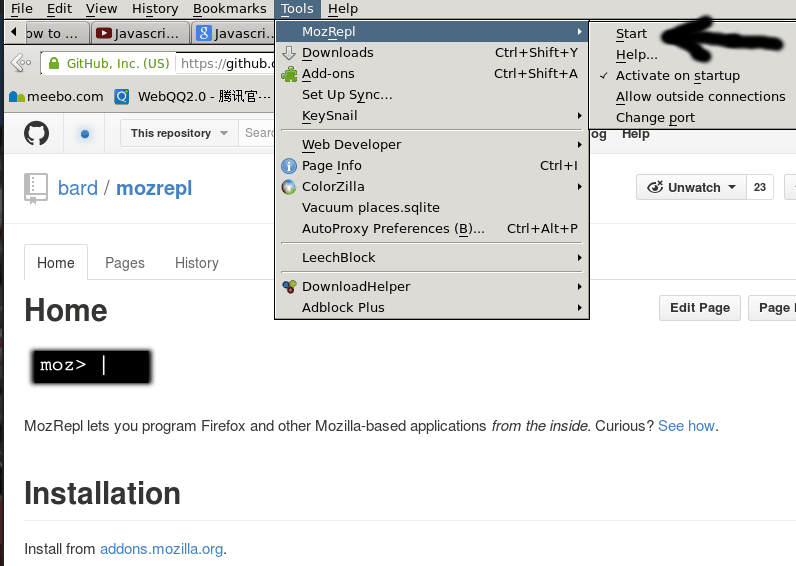
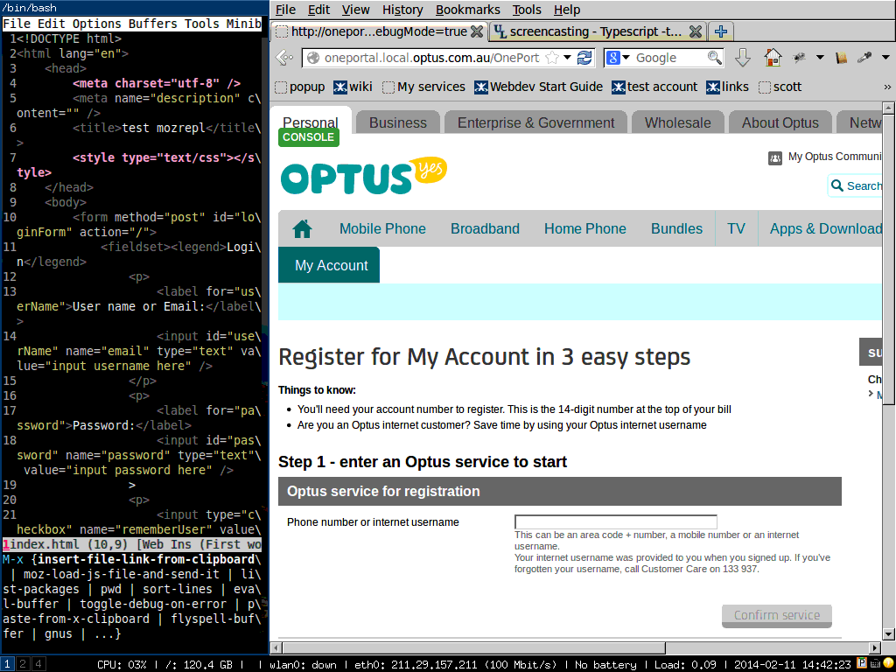

How to use org2blog effectively as a programmer
org2blog is a beautiful plugin to post to wordpress blog.
I won't waste your time on the basic usage because it has zero learning curve and its README is very clear.
I will talk some advanced set up here.
As a programmer, I need wordpress syntax highlight all the code snippets I post. But it seems org2blog need some tweak to support language like elisp.
If you grep org2blog's code, you will find a variable "org2blog/wp-sourcecode-langs". It lists all the languages org2blog supports.
So all you need to do is insert below code into ~/.emacs:
(setq org2blog/wp-sourcecode-langs
'("actionscript3" "bash" "coldfusion" "cpp" "csharp" "css" "delphi"
"erlang" "fsharp" "diff" "groovy" "javascript" "java" "javafx" "matlab"
"objc" "perl" "php" "text" "powershell" "python" "ruby" "scala" "sql"
"vb" "xml"
"sh" "elisp" "lisp" "lua"))
Then you need install the wordpress plugin SyntaxHighlighter Evolved to do the syntax highlight thing. Well, you will find the languages like elisp is not supported by this plugin.
That's easy to fix. Please log into your blog, modify that plugin online:
diff --git a/syntaxhighlighter.php b/syntaxhighlighter.php
index 53b4815..808b14b 100644
--- a/syntaxhighlighter.php
+++ b/syntaxhighlighter.php
@@ -222,6 +222,11 @@ class SyntaxHighlighter {
'xslt' => 'xml',
'html' => 'xml',
'xhtml' => 'xml',
+ 'text' => 'clojure',
+ 'elisp' => 'clojure',
+ 'lisp' => 'clojure',
+ 'sh' => 'bash',
+ 'lua' => 'ruby',
) );
As you can see, I use clojure syntax to highlight elisp and use ruby syntax to highlight lua.
You may ask why I use clojure syntax to highlight simple text in above set up?
Well, I already submit lots of my elisp code before set up my org2blog correctly. Those code snippets are regarded as simple text. I won't waste my time to mark those old snippets one by one. That's why I render text as clojure code.
Besides, I find the wordpress theme produced by Automattic (Yes, the company behind wordpress) is good for programmers because they obviously have optimized font size for different screen resolutions. That's important for code reading. I use Trvl v1.0.2.
How to adapt my work style to the employer's standard in Emacs
I write some set up code in ~/.custom.el. It will detect which machine and what directory I'm working on. Then I hook the set up code when major mode (js2-mode, web-mode, for example) loaded.
In my ~/.emacs,
(if (file-readable-p (expand-file-name "~/.custom.el"))
(load-file (expand-file-name "~/.custom.el")))
Content of my ~/.custom.el:
;; (getenv "HOSTNAME") won't work because $HOSTNAME is not an env variable
;; (system-name) won't work because as Optus required, my /etc/hosts is changed
(defun my/at-office ()
(interactive)
(let ((my-hostname (with-temp-buffer
(shell-command "hostname" t)
(goto-char (point-max))
(delete-char -1)
(buffer-string))
))
(and (string= my-hostname "my-sydney-workpc")
(not (or (string= my-hostname "sydneypc")
(string= my-hostname "ChenBinMacAir")
(string= my-hostname "eee")
)))
))
(defun my/use-office-style ()
(interactive)
(let ((dir (if (buffer-file-name)
(file-name-directory (buffer-file-name))
"")))
(string-match-p "CompanyProject" dir)
))
(defun my/setup-develop-environment ()
(cond
((my/use-office-style)
(message "Office code style!")
(setq coffee-tab-width 4)
(setq javascript-indent-level 4)
(setq js-indent-level 4)
(setq js2-basic-offset 4)
(setq web-mode-indent-style 4))
(t
(message "My code style!")
(setq coffee-tab-width 4)
(setq javascript-indent-level 2)
(setq js-indent-level 2)
(setq js2-basic-offset 2)
(setq web-mode-indent-style 2))
))
(add-hook 'js2-mode-hook 'my/setup-develop-environment)
(add-hook 'web-mode-hook 'my/setup-develop-environment)
My answer to "How do you use Emacs without a directory tree on the side of the editor?" on quora.com
This is original link of the question. Please note I focus on programming for large projects. I need search/grep/modify files scattered in different places without documentation.
If your use case is different, a embedded file explorer may be a better choice
Tools I use to replace a file explorer
- ido-find-file (emacs), just type any characters, it will fuzz search matched file in parent/sibling/current/or-whatever directory.
- helm-find-file (emacs), this one use regular expression and has bigger window
- recentf and helm (emacs), I use regular expression open recent opened files.
- ctags, gtags or whatever tag tools (CLI tool), as mentioned by other people
- I also use lots of bash functions written by myself, those functions are trivial, but combined with a wonderful tool called percol, they become really powerful.
- I use some CLI clipboard tool so I can easily share the file path between terminal/emacs/firefox.
- there is also a emacs bundled feature called speedbar, which is similar to the file explorer, I used it once, but it does not fit in my ninja style ;) It's fine but the UI is almost same to those average text editors.
- I also write some elisp snippets, for example, convert absolute path to relative path; given one relative path, output one absolute path, etc …
- there is also some git based emacs plugin: you can search file under the project root directory.
- there is a CLI tool called fasd which can let you interactively select the file or folder you recently visited.
- many other tools, plug-ins, code snippets I can use …
Use case
- I need search a big project for a certain library (it's a freemarker file I need include) whose full path I don't know, I just search the API's name by type:
"gef keyword *". gef is my bash function based on grep.
- matched files are displayed instantly (grep is much more quick than IDEs, BTW) in a interactive console filter (use percol), I type a regular expression to filter file name and press enter
- the full path is in clipboard now, then I type ":e Shift-insert" to open that file.
This is the most difficult case, I usually strike less keys and not get out of Emacs.
- If i need insert this file's relative path, I press a hot key and another emacs plugin will correctly convert absolute path to relative one (relative to the file I'm editing in Emacs) and insert it into my editor.
Demo
Here is screen cast. In this demo I grepped and open a ftl file and then search another js file in the same project.
One liner to download and install emacs lisp source code
Run the below command in shell,
curl http://ftp.gnu.org/gnu/emacs/emacs-`emacs --version|head -n1|sed 's/[^0-9.]*\([0-9]\+\.[0-9]\+\).*/\1/g'`.tar.gz | sudo tar --exclude=admin/* --exclude=etc/* --exclude=nt/* --exclude=doc/* --exclude=leim/* -C /usr/share/emacs/`emacs --version|head -n1|sed 's/[^0-9.]*\([0-9]\+\.[0-9]\+\).*/\1/g'`/lisp/ --strip-components=2 --wildcards -zxv *.el
For example, after installing the lisp code. You can M-x find-function package-list-packages in Emacs, you will jump to the definition of that command in "/usr/share/emacs/24.3/lisp/emacs-lisp/package.el" (I assume your emacs version is 24.3).
Add current directory into load-path in Emacs
Useful when developing emacs plugin:
(defun add-pwd-into-load-path ()
"add current directory into load-path, useful for elisp developers"
(interactive)
(let ((dir (expand-file-name default-directory)))
(if (not (memq dir load-path))
(add-to-list 'load-path dir)
)
(message "Directory added into load-path:%s" dir)
)
)
Code Rush
小结,代码库庞大,质量有问题,招了一些废物.M Toy:"我们不是要痛扁谁…". 1998年3月31日,Netscape公开其源代码.
| 人名 | 背景 |
|---|---|
| Jamie Zawinski | 黑客,擅长C/Perl/Lisp,不喜欢C++,XEmacs开发者,Netscape早期版本开发者)解释源代码的意义.注意键盘符合人体工程学. |
| Michael Toy | 牢游戏Rogue的开发者,该游戏被PC World杂志2009年评为史上最伟大PC游戏第六,是Diablo的老祖宗,Netscape最早员工 |
| Jim Barksdale | CEO |
| Jim Roskind | Security Expert,开发大型软件,很麻烦.还说了一大堆屁话. |
| Scott Collins | 值夜班,惨透了. |
| Brendan Eich | javascript |
| Jeff Weinstein | programmer at Netscape.并不是Netscape最优秀的员工.嘿嘿. |
| Tara Hernandez | QA |
| Blake Ross | http://www.insanely-great.com/news.php?id=3993 |
My answer to "What are some must-have emacs additions" on quora.com
Table of Contents
This is my answer for What are some must-have additions to your .emacs file? on quora.com.
Emacs 24 is already bundled with a package manager. So you can download and install the package without leaving Emacs. See http://www.emacswiki.org/emacs/ELPA for how to set up.
If you want to know more tips about specific plugin. Please search its name in Emacswiki.
1 Warning
I'm a web programmer, so my focus could be different from other emacs users.
2 third party plugins
2.1 company-mode
auto completing code, it requires less key typing than another emacs plugin auto-complete. Besides, it's actively maintained
2.2 yasnippet
insert template
2.3 js2-mode
javascript development, best of the best
2.4 evil-mode
vim simulator, I cannot live without it as a vi guy
2.5 evil-leader
evil's plugin, simple and powerful if you realize that ALL the hot keys (for example, I map "M-x" to ",mx") can be re-mapped with it
2.6 evil-matchit (written by me)
jump between tag pair, port of vim matchit
2.7 evil-nerd-commenter (written by me)
(un)comment by lines, port of nerd-comment
2.8 helm
hard to describe but powerful
2.9 web-mode
major-mode for all html templates
2.10 windows-numbering.el
sub-window navigation, best one. well, it occupies hotkey from M-1 to M-9, For normal emacs user this could be issue. but I'm evil guy;)
2.11 smex
you don't need remember hot key or command any more
3 plugins bundled with emacs 24
3.1 org-mode
gtd tool, it changed my life, as git,vim,emacs did to me ages ago.
3.2 winner-mode
undo sub window-layout
3.3 gnus
hate and love it. the UI is too geek. but has some killer feature, for example, forward email, send email quickly, attach file. but the point is I can use with other awesome plugins like yasnippet, company-mode,evil.
3.4 ido
similar to helm, my tip, you can tell helm when to use ido, when to use helm.
3.5 imenu
display list of function in current buffer, the point is it is programmable
3.6 flymake
real time syntax check
3.7 flyspell
best spell checker, if you know how to do programming for it
4 The last and best plugin
Lisp!
- simple
- no learning curve,
- it's syntax ensure that its plugin developer are experienced developers who knows at least three programming languages.
5 Tip
If I find some awesome plugin, I will investigate the original author and make sure what other tools he/she uses or develops
For example, mooz maintains js2-mode, he also developed:
- keysnail
- firefox is converted into Emacs, best one in similar tools (I tried 3 or 2 similar firefox/chrome addons before settled on keysnail)
- percol
- A genius utility for shell operation. Make me ten times faster when working in bash shell. Without it, I will quit my programming career immediately.
How to do HTML/Javascript REPL (Read–eval–print loop) with NO server set up
1 Problem
I love the REPL (Read–eval–print loop). Watch live update of web UI when typing code is cool.
But most solutions around the internet are not practical for me.
In my world, I never has a chance to develop fancy 2D/3D games written in HTML5 canvas.
Intead, I was ALWAYS assigned to maintain some enterprise CMS with complex business logic. For example, after refreshing the web page I need click lots of buttons before doing the job. Avoiding press "refresh page button" does not help much.
Besides, I can't use the embedded server those solutions boasted because our web application has many dependencies. It needs a whole environment support team to set it up. There is no way I can persuade the team to use a different web server
So for me, a practical solution must be:
- easy to set up
- powerful. I can read/write any part of the web page in my text editor
- no learning curve. I don't want to learn any domain specific language or API. For example, if my web application uses jquery, I want use and only use jquery API to manuipulate web page in my text editor. If it use backbone, then I use backbone. No more, no less.
2 Solution
The best solution is firefox addon MozRepl. You can install it https://addons.mozilla.org. Click firefox menu "Tools => MozRepl => Start" to run it. 
So what is MozRepl, as its web site says, "MozRepl lets you program Firefox and other Mozilla-based applications from the inside." Basically it convert firefox into a socket server. Your text editor could talk to firefox and let firefox do anything you want. Since it only interact with the firefox, I don't need mess with the web server.
Well, I hope I can end this article by claiming "after reading its official tutorial,I live happily with MozRepl ever after".
The ugly truth is, MozRepl has some rough edges. That's the reason why I write this article. I will explain how to use MozRepl in next two sections.
Section 1 is about how to use MozRepl, whatever text editor you use, you should read this section.
Section 2 is on how to set up my text editor Emacs to interact with MozRepl. It's optional.
2.1 Section 1, use MozRepl
Here are key points:
- You need read above official tutorial at least once
- There is video demo on youtube. I suggest watching from 2:18 because you possibily are more interested in manipulating web page than toy with firefox internals.
- web page is called "content" in MozRepl
- In order to execute your javascript code with exactly same syntax as your web application is running code "repl.enter(content);" at first line, as you can see in both video and text tutorial
- Use firefox 24.0+ and MozRepl 1.1.2+
- For some weird reason, MozRepl socket server needs some warm up after web page refreshed. So run the code like "console.log('hello');" in the first connection, close the connection, and run your other code in second connection.
- For code running in MozRepl, if one line will trigger some AJAX request, all the code just after that line will not be executed. Use javascript API "setTimeout' to work around this issue.
Here is a complete example (note how I use setTimeout) written in javascript,
$('#serviceId').val('0451235550');
$('#serviceId').keyup();
console.log('hi');
setTimeout(function(){
console.log('world');
$('input[value="1"][name="isAccountHolder"]').click();
$('#accountNumber').val('01234567891234');
setTimeout(function(){
$('#registrationLoginEmailAddress').val('cb@cb.cb');
$('#registrationLoginEmailAddress2').val('cb@cb.cb');
$('#password').val('Password1');
$('#passwordConfirm').val('Password1');
$('#title').val('Mr');
$('#serviceFirstName').val('chen');
$('#serviceLastName').val('bin');
$('#registrationLoginDetailsContinueBtn').click();
},2000);
$('#serviceAccountContinueBtn').click();
},3000);
$('#confirmServiceBtn').click();
As you can see from above, I can use jQuery API loaded in that web page without any problem. Of course, you can always use vanilla javascript instead.
Please note the code is not part of my web application! It will be run only in MozRepl. You can telnet to the MozRepl socket server (127.0.0.1 with port 4424) and copy paste above code line by line.
2.2 Section 2, set up text editor (Emacs)
My text editor is Emacs, so I use Emacs as an example.
Step 1, install moz.el according to official manual.
Step 2, Please insert below code into your ~/.emacs:
(defun moz-goto-content-and-run-cmd (cmd)
(comint-send-string (inferior-moz-process)
(concat "repl.enter(content);"
cmd
"repl.back();")))
(setq moz-repl-js-dir (expand-file-name "~/moz-repl-js-dir"))
(defun moz--read-file (js-file)
(with-temp-buffer
(insert-file-contents js-file)
(buffer-string)))
(defun moz--load-js-file (js-file)
(let (cmd )
(when (file-exists-p js-file)
;; make moz API usable in any major-mode
(moz-minor-mode 1)
;; flush mozrepl at first
(moz-goto-content-and-run-cmd "console.log('hello');")
;; read the content of js-file
(setq cmd (moz--read-file js-file))
(moz-goto-content-and-run-cmd cmd))))
(defun moz-load-js-file-and-send-it ()
"load js file from specific directory and send it to mozrepl"
(interactive)
(let ((js-file (read-file-name "js file:" moz-repl-js-dir)))
(moz--load-js-file js-file)
))
From now on, you only need "M-x moz-load-js-file-and-send-it" and select the js file you need MozRepl to run.
3 Tips
3.1 Tip 1
Well, this is a simple tip. Maybe you are already aware of this.
You can write a all-in-one.js. In all-in-one.js, you can parse the URL to separate logic for different project.
Here is javascript code,
var url=document.URL;
if(/^.*mycompany\.com\.au.*my-account\/registration/.test(url)){
console.log("for regitration module");
} else if (/^.*mycompany\.com\.au.*my-account\/my-profile/.test(url)) {
console.log("for profile module");
}
Since javascript is good at analyzing URL, you can also tweak the URL parameters. Anyway, the full power of javascript is at your hand.
3.2 Tip 2
Sometimes mozrepl will be unresponsive. You can test it by running "M-x moz-reload-browser" to refresh the page. If page is not refreshed, restart Firefox. Luckily this does not happen too often.
(defun moz-reload-browser ()
(interactive)
(comint-send-string (inferior-moz-process)
"setTimeout(function(){content.document.location.reload(true);}, '500');"))
4 Demo
Here is a demo how I use it in a real world web application development.
The script to drive the firefox is written in simple javascript/jquery code, which I already show you.

Notes on set up nfs on ArchLinux
Key points
- see Redhat documenation, best doc on exportfs
- Understanding Subnet mask and essential Subnet mask
-
sudo exportfs -rto reload /etc/exports -
sudo exportfs -vto see current nfs exports - content of /etc/exports:
/srv/nfs4/z 192.168.0.0/16(ro,insecure,no_subtree_check)
- check optimizatioin tips
-
man 5 exportsfor the documentation of /etc/exports - Debugging NFS File Access on Server and Client Side
# turn on the log sudo rpcdebug -m nfsd -s proc # turn off the log
- then
sudo tail -f /var/log/messages.log - Basically you need
sudo systemctl enable syslog-ng.serviceto enable system log before you use rpcdebug
Summary
On server side:
sudo exportfs # got output like: # /srv/nfs4/z 192.168.0.0/16
Then on client side:
# 131072 is 128K sudo mount 192.168.1.9:/srv/nfs4/z ~/z -o rsize=131072,wsize=131072,noatime,nodiratime,intr
Git merge in command line
List and filter all the files need resolve conflict, then apply certain git operation on them:
git diff --name-only --diff-filter=U|grep "\.html\|\.min\.js"|xargs -I{} sh -c "git checkout --theirs {} && git add {}"